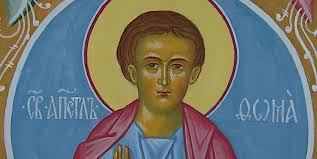
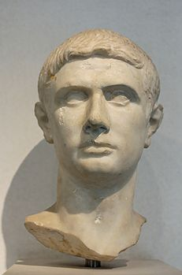
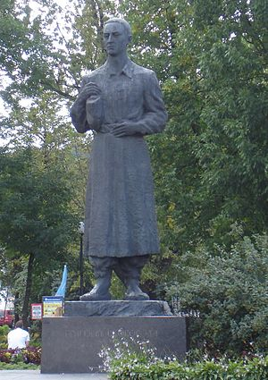
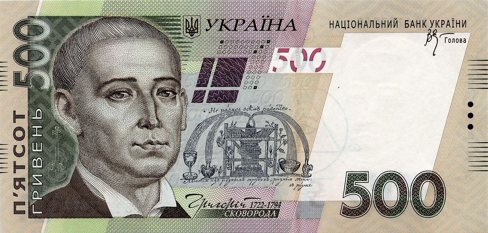

Качка на пательні
Хома Брут, невірний Хома мандрує з Києва в Україну і потрапляє в пастку до відьми, де гине (?) після зустрічі з чудовиськом, що має довгі вії, які не хочуть підніматися. Звідки таке ім’я?
 Тома (грец. Θωμάς, лат. Thomas), або Фома — один з 12 апостолів Ісуса Христа. Вшановується усіма християнськими церквами. За переказами проповідував Євангеліє в Азії, дійшовши в 52 році до Південної Індії. Загинув мученицькою смертю від рук язичників. Прізвисько — «невіруючий Тома (Фома)», через сумнів у воскресінні Христа при зустрічі з ним після Воскресіння. Вважається святим патроном Індії. Також — Хома́.
А звідки прізвище?
 Марк Юній Брут (лат. Marcus Junius Brutus Caepio) — (*85 — †42 до н. е.) — римський політичний діяч, сенатор, претор 44 року до н. е. Прихильник аристократичної республіки. Очолив змову сенаторів проти Юлія Цезаря, брав участь у його вбивстві. За легендою, смертельно поранений Цезар звернувся до Брута із своїми останніми словами «І ти, Бруте?» — тому що Цезар Бруту довіряв і не підозрював у зраді. Програвши в бою військам триумвірата — Октавіана, Марка Антонія і Лепіда, Брут заподіяв собі смерть.
В літературі образ Брута, який начебто втілював у собі вищі республіканські чесноти, часто ідеалізувався. В українській літературі — в поемі «І мертвим, і живим…» Тарас Шевченко назвав ім'я Брута, як синонім борця за свободу. В класичній літературі ім'я Брута часто асоціюється з такими людськими вадами, як нерішучість, підступність та зрада.
Очевидно, Гоголь навмисне робить з імені героя шараду для (втаємничених) випускників класичних гімназій, але в самому творі «Вій» він довго, зі смаком і видимою любов’ю описує школу, так-так, ту саму яку тепер пафосно називають «Академія». В цю саму школу він перед тим послав вчитися Остапа і Андрія, а серед всіх сторінок «Тараса Бульби» сторінки присвячені школі (бурсі) – найкращі.
Як же виглядав Хома?
Це дуже просто уявити, адже на площі навпроти сучасної Академії стоїть чотирьохметровий пам’ятник студенту (ритору, філософу), який пішов у світ.
Єдине, що ми знаємо про цього велетня напевно, що «світ ловив його, але не впіймав».
Портрет цього мудреця і оригінала прикрашає купюру 500 гривень. Ті, хто читали «Вій» заперечать цю аналогію, адже світ, тобто зачарований хутір впіймав Хому.
Отож бо й воно, Гоголь, який обрав кар’єру в столиці імперії, сперечається зі Сковородою і начебто доводить, що світ все одно впіймає тебе, скільки не втікай до Києва. Проте лиш пророчить власну нещасну долю.
Трохи згодом Гоголь пише до Максимовича
М. А. МАКСИМОВИЧУ.
"После 20 дек. 1833. Петербург".
Благодарю тебя за всё: за письмо, за мысли в нем, за новости и проч. Представь, я тоже думал. Туда, туда! в Киев! в древний, в прекрасный Киев! Он наш, он не их, не правда? Там или вокруг него деялись дела старины нашей.
Я работаю. Я всеми силами стараюсь; но на меня находит страх: может быть, я не успею. Мне надоел Петербург, или, лучше, не он, но проклятый климат его: он меня допекает. Да, это славно будет, если мы займем с тобой киевские кафедры. Много можно будет наделать добра. А новая жизнь среди такого хорошего края! Там можно обновиться всеми силами. Разве это малость? Но меня смущает, если это не исполнится...
Если же исполнится, да ты надуешь — тогда одному приехать в этот край, хоть и желанный, но быть одному совершенно, не иметь с кем заговорить языком души — это страшно! Говорят, уже очень много назначено туда каких-то немцев, это тоже не так приятно. Хотя бы для святого Владимира побольше славян. Нужно будет стараться кого-нибудь из известных людей туда впихнуть, истинно просвещенных и так же чистых и добрых душою, как мы с тобою.
Але мрія про Київ залишиться на сторінках «Вія» і «Тараса Бульби». Сковорода прожив власне довге і гідне життя вільним, сіючи поміж людей «сад божественних пісень» і, за виразом Мирослава Поповича, сформулював «філософію свободи» у своїх ненадрукованих, проте вічних творах. Гоголь з гумором і любов’ю оспівав рідну Україну, вирвався у Європи, проте дав зловити себе на гачок імперського месіанства, взяв аванс на «порятунок» мертвих душ, і не вчувся, як тії душі вмертвили його, неначе Хому.

Отака от «Качка на пательні» - тобто Гоголь на Сковороді :)